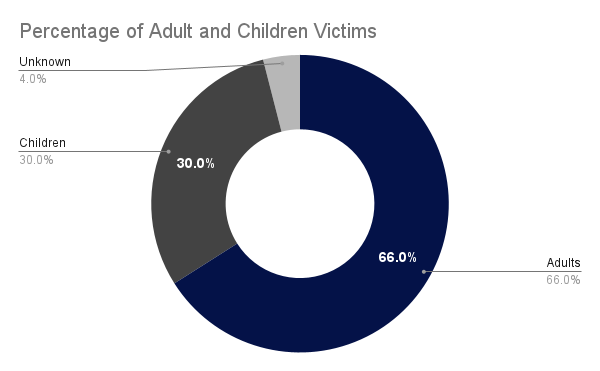

Human trafficking is a global issue; there are currently 156,330 active human trafficking cases worldwide (ctdatacollaborative.org). Utah has been marked as a hotspot for human trafficking in the US, by the National Trafficking hotline. As of 2019, there were 251 Utah victims of human trafficking. It is also important to remember that many cases may go unresolved or even unheard of. Unfortunately, the pandemic has spiked human trafficking rates by 40%.
Human trafficking is very present in our lives; by becoming informed and aware, we have the ability to slow these rising rates of abuse.

Traffickers use force, fraud, or coercion to force vulnerable victims into labor or commercial sexual exploitation. The graphic to the left displays some common tactics they are known to use:
Recognizing key indicators of human trafficking can save a life. Any suspicions should be investigated by law enforcement only. The indicators included in the graphic to the left are not all-inclusive and do not necessarily constitute proof of human trafficking, but can help:
| Date missing | Last Name | First Name | Age when missing | City | State | Gender | Race |
|---|---|---|---|---|---|---|---|
| 10/30/2009 | Sharmarice | Halima | 14 | Granger | UT | F | W |
| 10/16/2015 | Martinez | Kimberly | 16 | West Valley City | UT | F | M |
| 07/23/2004 | Gomez | Brenda | 3 | Logan | UT | F | H |
| 05/25/2003 | Bishop | Acacia | 1 | Salt Lake City | UT | F | W |
| 08/03/2020 | Salazar | Maria | 14 | Snowville | UT | F | H |
| 04/09/2020 | Hernandez-Soto | Peggy | 6 | Ogden | UT | F | H |
| 06/24/2021 | Jimenez | Lucero | 14 | West Valley City | UT | F | H |
| 11/08/2013 | Colindres-Avila | Yuris | 17 | West Valley City | UT | F | M |
| 07/15/2021 | Harris | Kandis | 16 | Salt Lake City | UT | F | W |
| 07/30/2006 | Seal | Jaydan | 1 | Garleys Wash | UT | M | W |
| 06/13/2018 | Lizarraga | Jose | 13 | West Valley City | UT | M | H |
| 04/23/2020 | Cortez Trujillo | Eztli | 21 | North Ogden | UT | M | H |
| 10/25/2017 | Fowles | Juan | 15 | Lehi | UT | M | M |
| 08/20/2012 | Garcia | Isai | 17 | West Valley City | UT | M | M |
| 09/01/2015 | Smith | Macin | 17 | St. George | UT | M | W |
| 01/26/2006 | Sisco-Ramirez | Jose | 4 | West Valley City | UT | M | M |
Aspen house provides a home-like residence that offers a safe and nurturing environment to empower victims of human trafficking on a path to self-sufficiency.
Click the button below to help Aspen House provide free shelter, care and trauma healing.
Donate